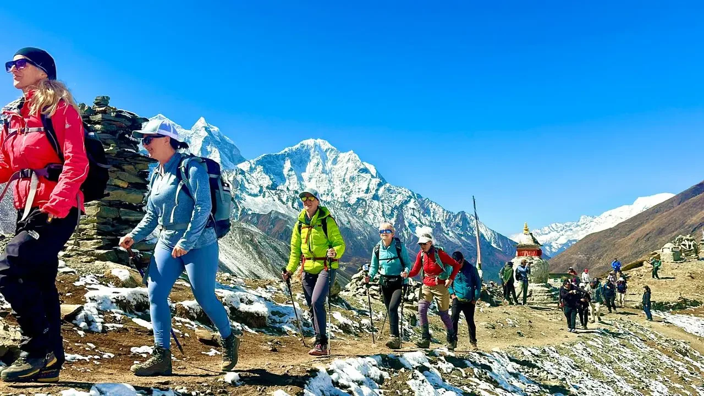
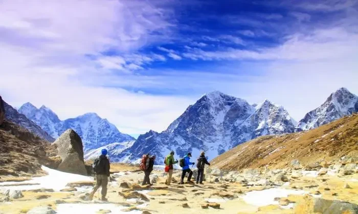
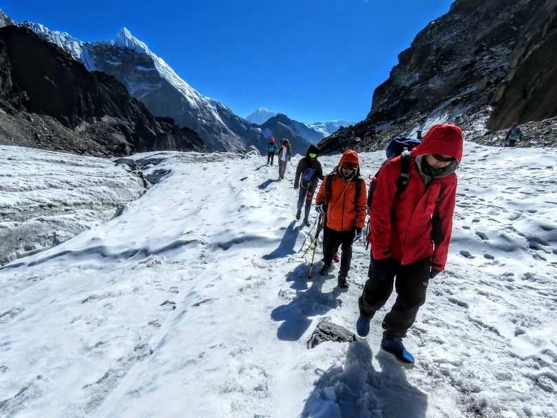

How High Is Everest Base Camp?

Everest Base Camp is at an altitude of 5,364 meters (17,598 feet) above the sea level. Its lies in the Khumbu region of Nepal, on the southern side of Mt. Everest. For many trekkers, to reach in this point is one of the meaningful journey and the moment. After several days of walking through the villages, forests, suspension bridges, and rocky trials, standing at the world highest mountain base camp feels very different from simply checking the photographs.
As you move deeper into the Khumbu Valley, the Everest base camp trek altitude changes slowly. At around 1,400 meters the journey begins at Kathmandu. After the amazing flight to Lukla, the trekkers start their journey at 2,860 meters. The trial gradually climbs through places like Phakding, Namche Bazaar, Tengboche, Dingboche, Lobuche, and Gorakshep, from Lukla.
At 3,440m, Namche Bazaar welcomes you to adjust the increasing altitude, which is also considered as an important stop for Everest Base Camp Trekking. From Namche Bazaar, the complete landscape changes as the trail climbs more higher. You will be seeing very less vegetation, the cold air hits you harder, and the walking needs more efforts. By the time trekkers reach Dingboche at 4,410m , the difference from trekking starting point Kathmandu is already significant.
At 5,170m, Gorak Shep is the last overnight point, before you reach to majestic Everest Base Camp. From the point, the trail keeps on leading to Khumbu Glacier and Everest Base Camp at 5,364m. The surrounding environment becomes more rugged, with glaciers, moraines, and huge Himalayan peaks happily rising around the trail.
To your surprise, Everest Base Camp is not the highest point reached during the route. Kala Patthar is at 5,545m, making it more higher that Everest Base Camp. Trekkers normally climb Kala Patthar early morning to explore the views of Everest, Lhotse, Nuptse, and other surrounding peaks.
If you are able to understand the Everest Base Camp Trek Altitude, it will help you to appreciate why the journey is not only about the distance travelled. Each elevation increment brings a different mountain environment and requires the body to adjust gradually.
Everest Base Camp Trek Altitude by Day
The Everest Base Camp Trek take you to quiet and high mountains of Khumbu region from 1,400m busy streets of Kathmandu Valley. The beautiful part of the journey is the gradual change in an elevation. Instead of risky thousands or meters gain in single day, the route is planned with safe and steady climbs, and the proper acclimatization stops, giving your body complete time to adjust when the air gets thinner.
Your journey starts with Kathmandu at around 1,400m. After the flight to Lukla at 2,860m, trekkers need to walk to Phakding, which is at lower altitude at about 2,610m. This is not a major gain so this allows you to ease and make more prominent in the journey.
From the Phakding, the trial moves upward to Namche Bazaar, at 3,440m. This is one of the most noticeable increases in altitude during the early phase of trekking. Namche Bazaar is also an important point to rest and acclimatize, where trekkers are supposed to spend an additional night and take short hike in nearby areas and surrounding hills to be more familiar with higher altitude and environment.
The path now continues to Tenboche at 3860m, and Dingboche at 4,410m. At dingboche, another acclimatization day is added to be more familiar with higher altitude. The mountain landscape becomes more open and rugged here, with very few vegetation and cold condition.
After Dingboche, the path reaches to Lobuche at 4,910m. The other major stop is Gorak Shep at 5,170m, where trekkers spend the last night before seeing the actual himalayan giant Mount Everest at 5,364m.
Place | Elevation |
Kathmandu | 1,400 m |
Lukla | 2,860 m |
Phakding | 2,610 m |
Namche Bazaar | 3,440 m |
Tengboche | 3,860 m |
Dingboche | 4,410 m |
Lobuche | 4,910 m |
Gorak Shep | 5,170 m |
Everest Base Camp | 5,364 m |
The Everest Base Camp Trek Altitude becomes more demanding above 4,000 meters, where the air contains less oxygen and normal walking can feel harder. The gradual elevation gain, rest days, and slower pace are important parts of the trekking experience.
After reaching the highest section, the route descends toward Pheriche, Namche Bazaar, and Lukla. This change in elevation often makes walking feel easier as trekkers return to lower and warmer parts of the Khumbu Valley.
Highest Point of the Everest Base Camp Trek
For many trekkers, Everest base camp is the highest point for the journey. Furthermore, trial gives you a surprise with Kala Patthar which is at height of 5545m (18,192ft.). It’s short but a demanding climb above Gorakshep which normally starts at morning.
Everest base camp stands at 5,364m. Gorak shep, is tha last settlement before the Everest base camp and is at 5,170m. All this three place are very close to each other but offer very unique experiences.
Gorak Shep is the place where trekkers spend the night in the highest altitude. From Gorak Shep, the trail to Everest Base Camp follows the rocky environment around the Khumbu Glacier. Reaching the Everest Base Camp is a great moment because you are standing among the mountains and glaciers that climbers pass through the Everest expedition.
Moreover, the climb to kala patthar is totally a different experience. And, trekkers wake up before sunrise and begint he walking in the darkness with warm and comfortable clothing and a headlamp for a trail support. In the trial, thin air can make even a short climb feel exhausted. The effort become more attractive and noticeable as you approact the 5,500m, where every step need a careful eye and patience.
The main reward is the panoramic view from the top. As the first morning rays reaches the peaks, Mount Everest appears above the Nuptse, and the surrounding Himalayan landscape. Pumaro, Ama Dablam, Lhotse, and other peaks can also be seen depending upon the weather condition and visibility of that specific day. For many trekkers, this quiet moment and sunrise become the one of the strongest memory of the entire journey to take back home.
With all relevant information we can say that, the Everest base camp trek altitude reaches its highest point in Kala Patthar rather than a Everest Base Camp. This needs to be considered while making the itinerary because the journey involved both reaching base camp and going to higher viewpoint known as Kala Patthar.
At this point, the mountain environment is harsh, and the air is much more thinner than in other place in trekking trial. The kalapatthar climb needs a slow pace, proper preparation to trek, and enough time for the body to adjust the increasing Everest base camp trek altitude.
Highest Sleeping Altitude on the EBC Trek
Gorak Shep is the highest sleeping altitude or overnight stop on the Everest Base Camp Trek, at 5,170m, above the sea level. It is a small settlement in uphill covered by Rocky Mountains, high himalaya landscape and high glaciers. For many trekkers, the point Gorak Shep is a clear sign that the main journey has entered and the section is most demanding.
Sleeping at the altitude 5,170m gives you the different feeling than simply hiking to a higher point during that day. While walking, you are more active and you keep moving at your own pace. But at night, however, your body has to adjust the thin air while you are at rest mode. Some trekkers may notice that they are breathing faster, sleeping lightly, or wake up more often they do. The other aspect to make night feel much more harder is cold, especially during winter or close to winter months.
Normally, Gorak Shep is a short stay at this elevation. Trekkers mostly arrive from Lobuche, have some rest for comfort, and some food and continue towards the Everest Base Camp. After returning to Gorak Shep , they spent overnight and early morning to Kala Patthar. Once the section of the high altitude is completed, the route descends to Pheriche at 4,371m.
At this place, even simple things like walking across the lodge, climbing the stairs, or getting ready for bed or doing simple activities can feel more tiring than the normal time at low altitude. The Everest base camp trek altitude becomes a real part of the experience in this place, the trekkers will be reminded that the journey is at its best in Himalayan environment.
Acclimatization on the Everest Base Camp Trek

Acclimatization is important and non-negotiable parts of the Everest Base Camp Trek. As a trekker, climbs higher, the air becomes thinner and the amount of available oxygen in the air decreases. Human body needs time to adjust to these changes. A good itinerary doesn’t simply focus on reaching the top but consider this kind of factors and adjust the days accordingly.
First acclimatization point is Namche Bazar which is about 3,440m and surrounded by impressive enormous peaks. After reaching Namche, trekkers spend another night in the place instead of immediately continuing towards the other stop Tengboche. During the day, hike towards surrounding is good to adjust with the local condition. Trekkers can visit Everest View Hotel or nearby village such as Khumjung, that helps to keep body active and adjust the altitude.
The 2nd important point for the acclimatization is DIngboche, located around 4,410m. By this point the ladscape changes noticeable way. You will see thinner forest, the air feel colder, and even a short uphill require more effort than usual. Trekkers can usually do a short hike towards Nangkarstang Peak or surrounding ridges to be more active and adjust before going to the next destination Dingboche.
These acclimatization are not simply rest days that are defined to spent in tent inside or in the teahouse. Clean meals, short walks, enough fluids, and proper rest are the complete forms of acclimation process. The main idea is to gain some elevation during the day and return to the starting point to make body adjust and adapt.
Altitude Sickness on the Everest Base Camp Trek
One of the main concerns for the trekkers heading to the base camp is altitude sickness. It can happen when the body is not properly adjusting to the higher altitude environment that normally have the lower oxygen level. It’s not the only beginner problem even an experience trekker can feel the problem any time so this issue cannot be ignored. Slow pace, acclimatization is the key to success at mountains.
This risk can be more noticeable at the altitude rises above 3,000m. The trial gradually moves from Namche Bajaar at 3,440m to the other point like Tengboche, Dingboche, Lobuche and eventually Gorakshep at 5,170m. At this higher elevation the air is much thinner than in the other down elevation point and body needs more time to adjust.
Common symptoms for the altitude sickness can include headache, dizziness, nausea, unusual tiredness, reduced appetite, and difficulty in breathing and sleeping. These symptoms should not be treated as normal tiredness. Paying attention to how your body is reacting could be the prevention to this issue. If you feel like unwell, tell your guide or group leader as soon as possible. Most of the regular guides can monitor and help decide what to do next. Rest, stopping further ascend, or moving to lower elevation may require depending upon the condition.
In the altitude sickness more serious symptom include, difficulty in walking properly, confusion, severe breathing issue or worsening the condition despite a rest may occur. These signs requires immediate attention and need to decent with no excuse as soon as possible. Just continuing upward to see Everest could be dangerous.
The best method is to listen to the body rather than following the itinerary perfectly. You need to realize that itinerary is just a outline not everything that you need to follow as a constitution. The Everest base camp trek altitude cannot be changed, but the pace and response to the altitude change can be managed with proper planning. Proper acclimatization, gradual ascent, enough rest , regular meals on trek, and communication with the guide and support staff all play an important role in dealing with the challenges of the high altitude in Everest base camp trekking.
How to Prepare for the High Altitude of EBC Trek

To prepare for the Everest base camp trek is not only being able to walk for the hours and hours but to understand the trial needs, take the good pace, understand the uphill and downhill, enjoy the nature and carry a respectful behavior while travelling or trekking, understanding the value or rest and acclimatization, and following the guide instruction. In the time good preparation can make the journey more comfortable and help to enjoy the trials, villages, glaciers, and the mountain views along the way.
The Everest base camp goes upto 5364m at base camp and 5545m at kala patthar. Before arriving to this elevation , it is necessary to build the stamina through regular walking, hiking or stair climbing and other relevant cardiovascular activities. Try to include longer endurance walk or hike on some days to make your body more familiar with spending several hours on your feet.
Other aspects that can help is strength training. Simple exercise of the leg, hips and core can prepare trekkers for uneven trials and uphill and downhill section. You don’t need to be an athlete to complete this trek but need to be serious about this adventure and understand the risk associated.
Habits also matter a lot in mountain, drinking enough fluids regularly, eat good quality food, and give your body a proper rest time and sleep and recover could help a lot. Appetite can change in higher elevations, but regular meals will provide good energy for the longer treks.
You need to have matching equipment as well, warm layers, a waterproof jacket, comfortable boots, gloves, a warm hat , sunglasses, sunscreen, and a useful bag for the higher section. As weather can change quickly in higher elevation you need to prepare yourself well.
As the Everest Base Camp Trek altitude increases, the patience becomes just as important as physical strength in trekking. Walk slowly, take short breaks, listen to body and stay in communication with your guide to make a real difference when the trial reaches the high Khumbu.
To help more about high altitude and acclimatization us Nepal Unique Treks and Expeditions provide highly experienced guides with proper first aid and high altitude trekking training. Our team of experts is ready to answer your queries if you have any.